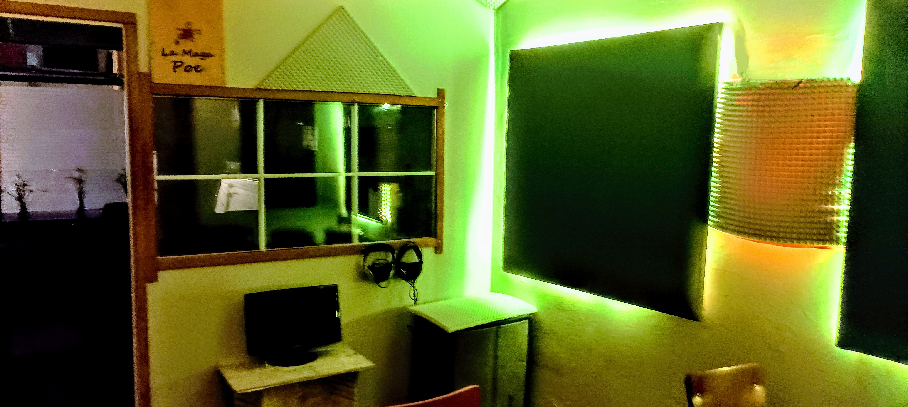
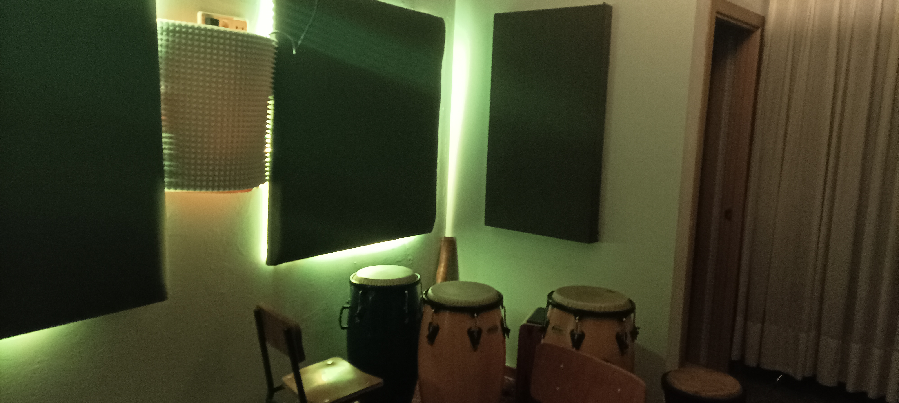

Producción en el entorno rural
Cómo la calma de Bimenes ayuda a encontrar el sonido perfecto para tu proyecto.
Próximamente
Producción y mezcla profesional en Asturias

Captura de alta fidelidad: Guitarras, Mandolinas y Gaitas
Cómo la calma de Bimenes ayuda a encontrar el sonido perfecto para tu proyecto.
Próximamente